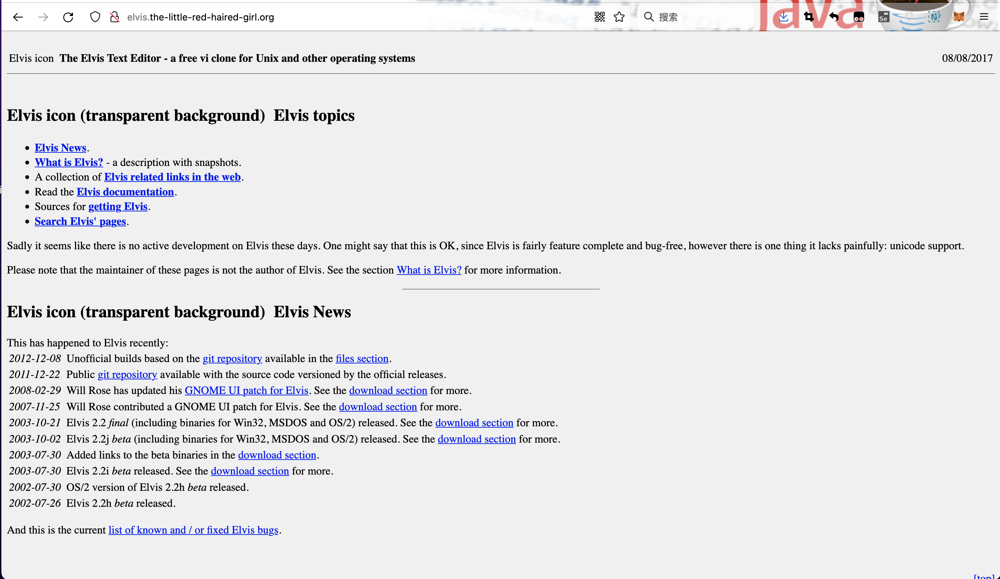
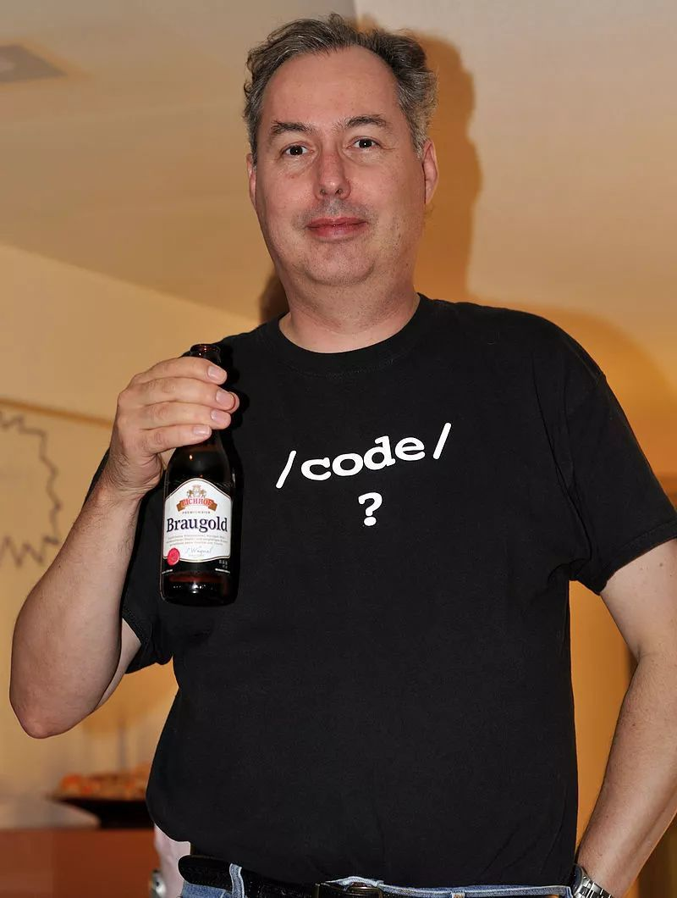
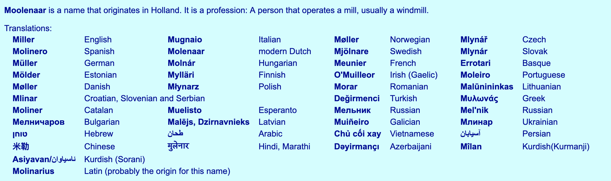
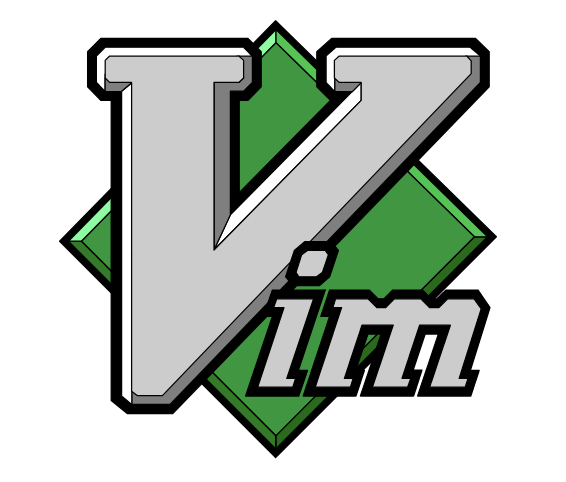
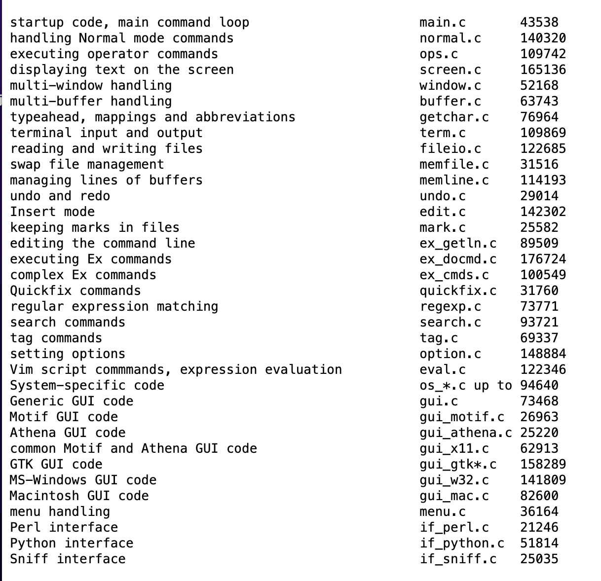
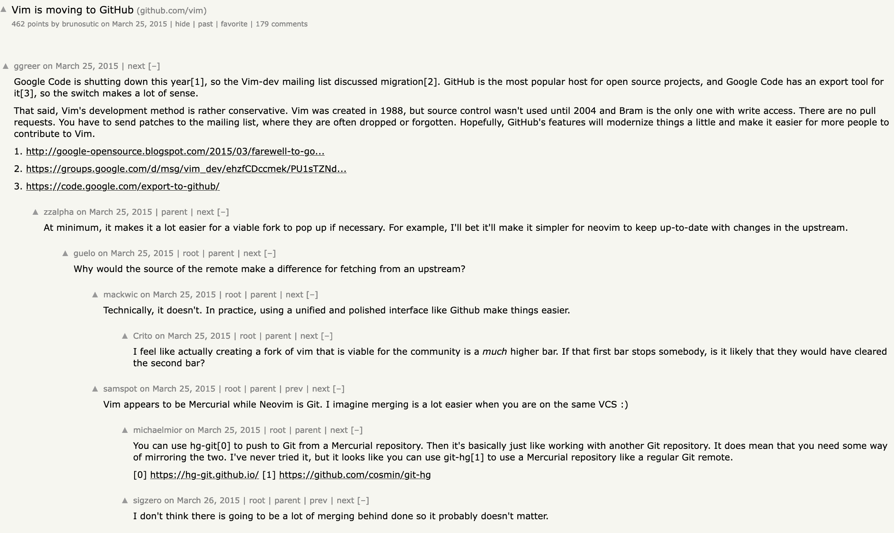
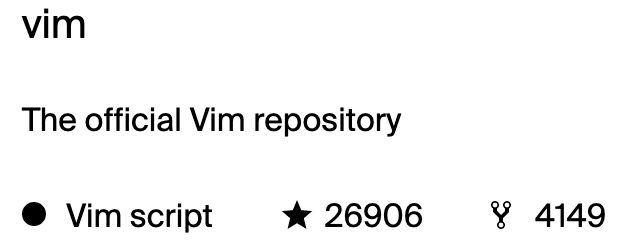
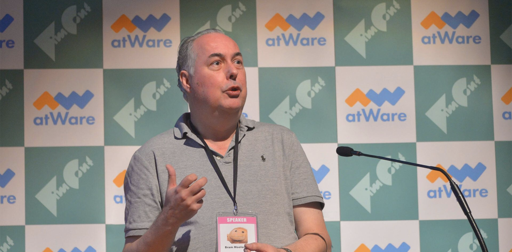

-- 可视 块 --motion:'<,'>d:'<,'>s/shiyanlou/oeasy/g 范围内批量替换:'<,'>s/\%Vg/graphic/gvi 是除 ed 之外唯一与 BSD Unix 捆绑的文本编辑器Emacs 可能会花费数百美元GNU Emacs 之前vi 变得非常流行vi 是 ed 的直接衍生版本AT&T 的源代码vi 的开源版本STEVIE （专门为 VI 爱好者的 ST 编辑器）出现于1987年Elvis 出现于 1990 年nvi 出现于 1994 年ElvisVim 中Elvis 用户推动了这些功能的加入Elvis 加了一个图形用户界面Elvis却挣了很多钱Elvis无法得到相应的资源和回馈
Venlo ，在城市东部Bram Moolenaar去了OceAmiga 2000 准备一款类似于 vi 的编辑器Moolenaar 已经习惯了在大学时使用的 Unix 系统上的 vi vi 了如指掌Moolenaar 偶然接触到接触到 STEVIE Fred Fish 的磁盘上Fred Fish 是一名美国程序员Amiga 平台提供的精选可用开源软件
（Bram Moolenaar，2006 年加入 Google）STEVIE 曾在 Fred Fish 磁盘上发布Moolenaar 使用的 STEVIE 版本在 Fred Fish 256 号磁盘上发布
Moolenaar 喜欢 STEVIEvi 命令Vim 时Moolenaar 优先考虑了 vi 的兼容性vi patches(补丁)vi 兼容编辑器时Moolenaar 能够让这些宏在 Vim 中运行Elvis 此时也和 vim 互相借鉴Vim 以 Vi模仿者(Vi IMitation) 为名第一次发布于 Fred Fish 591 号磁盘Moolenaar 添加了一些特性（包括多级撤销和解决编译器错误的“quickfix”模式）Vim 已经完成了对 Vi 的重构在 1993 年
Vim 2.0 之前Vim 都仍以 Vi模仿者 的身份存在和其他许多“vi克隆版本”一样
Vim 始于在一个无法使用 vi 的平台上复现 vi 的一个尝试稳健地在Vim` 中加入了一些功能Vim 2.0 引入了对 wrap 选项的支持vi克隆nvi 的启发Vim 3.0 增加了对分割窗口和缓冲区的支持Vim 现在还将每个缓冲区保存到交换文件中以避免程序崩溃造成文件丢失Vim 5.0 中Vim 支持语法高亮显示MS-DOS、 Windows、MacUnix 与原来的 vi 竞争Vim的含义也变成了Vi IMproved(Vi 改进版)模拟版 Vi
1998年11月
前三项和第六项已在Vim 6.0中实现

Emacs 用户与 vi （即最终的 Vim ）用户进行了对比Emacs 肯定仍有一些追随者
Vim 被 Linux Journal 读者评为最受欢迎的编辑器Stack Overflow 的开发者调查Vim 是最受欢迎的文本模式（即终端模拟器）编辑器
| 年月 | 版本 | 事件 |
|---|---|---|
| 1991 Nov 2 | Vim 1.14 | First release (on Fred Fish disk #591) |
| 1992 | Vim 1.22 | Port to Unix. Vim now competes with Vi |
| 1994 Aug 12 | Vim 3.0 | Support for multiple buffers and windows |
| 1996 May 29 | Vim 4.0 | Graphical User Interface (largely by Robert Webb) |
| 1998 | Feb 19 | Vim 5.0 |
| 2001 Sep 26 | Vim 6.0 | folding, plugins, vertical split |
Vim 是如何变得如此成功的？
Vim 所提供的特性Vim 背后的悠久历史表明了它的优势远不仅仅体现在其功能集上Vim 的代码库可以追溯到 1988 年Moolenaar 开始研究它某种程度上要感谢 Bill Joy 和 Bram Moolenaar 对向后兼容性非比寻常的关注
vim文本编辑器 是运行时间最长、最成功的开源项目之一Vim 提醒我们